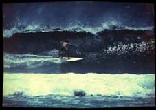

La victoire du surf
Océanes, le plus jeune fournisseur d'accès Internet de la Réunion organise en cette fin d'année un concours du meilleur site web de l'année 1997.
- Voir aussi: Les premiers fournisseurs d'accès réunionnais
Les 6 meilleurs sites web de la Réunion
Les 6 gagnants de ce concours méritent leur lien sur cette page. Grâce à ces sites vous (re)découvrirez la Réunion biensûr, mais aussi Hong Kong ou le Japon.
Le fournisseur Océanes ayant disparu, le site du concours n'est plus disponible je vous propose donc de ne visiter que le site du vainqueur qui est lui resté en ligne.
Et le gagnant est… Surf memory
Le vainqueur nous propose une balade en surf sur l'océan indien, et en trilingue s'il vous plaît! (français, réunionnais et anglais). Cette balade est un peu spéciale parce que c'est une balade dans le temps aussi. Une collection de photos datant d'avant l'arrivée d'Internet sur l'île témoigne de la présence de ces surfeurs des mers depuis des années sur les vagues de l'Océan Indien. D'où le nom de Surf Memory. Autour du SurfShop de Saint-Leu, on retrouve des noms comme Albert Cachera, Frank Arnaud, ou Stéphane Boyer qui ont fait l'histoire du surf à la Réunion. Le site est signé Cyril Thevenau qui lui aussi savait prendre des rouleaux.

- Voir aussi: La crise du requin
- D'autres photos anciennes: Noir et blanc à Saint-Denis